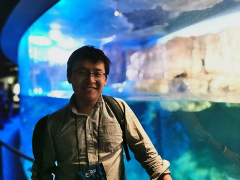
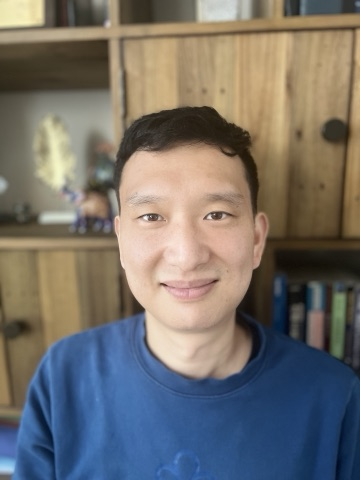
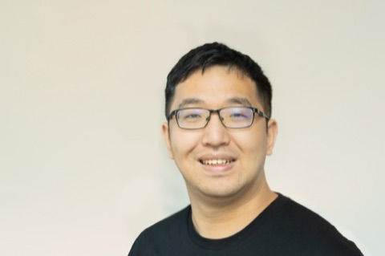
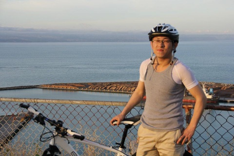

Security, privacy, evaluation, and deployment for agentic systems. Once a model can call APIs, run code, browse, query databases, and use memory, it acquires risks that accuracy alone does not measure — this workshop is about those risks.
When an agent retrieves documents, browses the web, executes code, calls external APIs, queries databases, drives a UI, reads or writes memory, or initiates a transaction, it stops being a passive predictor and becomes an actor whose mistakes have external consequences. Every tool or skill it gains is also a new attack surface, and the resulting failures are invisible to accuracy-based evaluation.
We argue that the safety of these systems cannot be inherited from model-level alignment: the risks live at the interface where the model meets the tools, data, and infrastructure it acts on, and that interface needs its own threat models, evaluations, and defenses. The workshop brings together researchers from trustworthy AI, AI and systems security, privacy, software engineering, and governance to align on threat models, evaluation methods, and practical guidance for safer agentic systems.
We invite contributions from machine learning, AI security, privacy, software engineering, systems, and governance — including work that releases benchmarks, tools, red-teaming protocols, deployment case studies, and negative results.
All deadlines are anywhere-on-earth (AoE). Dates are tentative and will be finalized on acceptance of the workshop. Submissions are managed via OpenReview.


Additional speakers to be announced. “Invited” indicates speakers approached pending confirmation.
A single-track, full-day program (≈7–9 hours). Roughly half the day is reserved for contributed spotlights, posters, demos, and discussion rather than talks alone.
Final schedule with talk titles will be posted before the workshop.


The workshop is non-archival and is not a venue for work already published or accepted at NeurIPS or other archival ML venues; we ask for work in progress. Authors may submit extended versions to future archival venues.
Submission link goes live when the call opens.